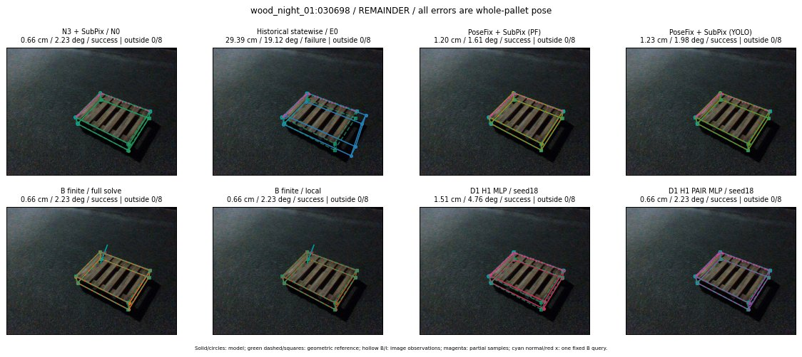

Whole-pallet pose errors; reference is a fixed geometric annotation, not certified physical GT.

Scores are uncalibrated logits. N0 retention is a numerical pose alias; it differs from H0 none or B fallback. B/I and profiles in baseline/B panels are original observations; L panels use new D1 observations. Only one deterministic supported B query is shown in a thumbnail; full support counts are below. Grey privacy rectangles edit the display copy only and are unrelated to O states; all observations were measured on original pixels. Thumbnails use JPEG quality85; detailed scientific panels are PNG.
| Method | Whole pose / cm, deg | Actual source | Selected ID | Score | Archived candidates | Eligible | N0 retained | H0 none | Fallback | Finite profiles |
|---|---|---|---|---|---|---|---|---|---|---|
| Raw YOLO + F | 1.63 cm / 2.98 deg / success | OTHER | None | N/A | N/A | N/A | False | N/A | None | N/A |
| N3 + SubPix / N0 | 0.66 cm / 2.23 deg / success | N0 | None | N/A | N/A | N/A | True | N/A | None | N/A |
| Historical statewise / E0 | 29.39 cm / 19.12 deg / failure | E0_REGENERATED | None | N/A | N/A | N/A | False | N/A | False | N/A |
| PoseFix raw | 0.61 cm / 1.81 deg / success | OTHER | None | N/A | N/A | N/A | False | N/A | None | N/A |
| PoseFix + SubPix (PF) | 1.20 cm / 1.61 deg / success | OTHER | None | N/A | N/A | N/A | False | N/A | False | historical support records 9; finite audit N/A |
| PoseFix + SubPix (YOLO) | 1.23 cm / 1.98 deg / success | OTHER | None | N/A | N/A | N/A | False | N/A | False | historical support records 9; finite audit N/A |
| Historical L, seed18 | 0.66 cm / 2.23 deg / success | N0 | N0 | N/A | 61 | 61 | True | True | True | N/A |
| Historical B fixed bank | 1.51 cm / 4.76 deg / success | OTHER | G10/ORIGINAL_WD/sample/4 | N/A | N/A | N/A | False | N/A | False | N/A |
| Historical B full | 2.57 cm / 6.39 deg / failure | OTHER | NEW/B/ORIGINAL_WD/h0/G13/ORIGINAL_WD/sample/0/PROPOSED_NATIVE_YAW_0 | N/A | N/A | N/A | False | N/A | False | N/A |
| Historical edge full | 17.90 cm / 21.76 deg / failure | OTHER | NEW/edge/ORIGINAL_WD/h2/G10/SWAPPED_WD/sample/5/PROPOSED_NATIVE_YAW_2 | N/A | N/A | N/A | False | N/A | False | N/A |
| Historical AB full | 2.26 cm / 5.67 deg / failure | OTHER | NEW/AB/SWAPPED_WD/h3/G13/ORIGINAL_WD/sample/10/PROPOSED_NATIVE_YAW_3 | N/A | N/A | N/A | False | N/A | False | N/A |
| B finite / fixed bank | 0.66 cm / 2.23 deg / success | N0 | N0 | N/A | N/A | N/A | True | N/A | True | N/A |
| B finite / full solve | 0.66 cm / 2.23 deg / success | N0 | N0 | N/A | N/A | N/A | True | N/A | True | N/A |
| B finite / local | 0.66 cm / 2.23 deg / success | N0 | N0 | N/A | N/A | N/A | True | N/A | True | N/A |
| Edge finite / full solve | 15.44 cm / 8.72 deg / failure | OTHER | NEW_FINITE/edge/ORIGINAL_WD/h0/G13/ORIGINAL_WD/sample/0/PROPOSED_NATIVE_YAW_0 | N/A | N/A | N/A | False | N/A | False | 28/28 |
| D0 H0 MLP / seed18 | 0.66 cm / 2.23 deg / success | N0 | N0 | 2.4339311122894287 | 32 | 32 | True | True | True | N/A |
| D0 H0 MLP / seed19 | 0.66 cm / 2.23 deg / success | N0 | N0 | 3.112210273742676 | 32 | 32 | True | True | True | N/A |
| D0 H0 MLP / seed20 | 0.66 cm / 2.23 deg / success | N0 | N0 | -0.7097696661949158 | 32 | 32 | True | True | True | N/A |
| D0 H1 MLP / seed18 | 1.51 cm / 4.76 deg / success | OTHER | WD0/ORIGINAL_WD/sample/3 | -3.38188099861145 | 32 | 32 | False | False | False | N/A |
| D0 H1 MLP / seed19 | 1.51 cm / 4.76 deg / success | OTHER | WD0/ORIGINAL_WD/sample/3 | -2.870206832885742 | 32 | 32 | False | False | False | N/A |
| D0 H1 MLP / seed20 | 29.38 cm / 19.11 deg / failure | OTHER | G13/ORIGINAL_WD/endpoint/35 | -4.3532514572143555 | 32 | 32 | False | False | False | N/A |
| D1 H0 MLP / seed18 | 0.66 cm / 2.23 deg / success | N0 | N0 | 7.0008015632629395 | 32 | 32 | True | True | True | N/A |
| D1 H0 MLP / seed19 | 0.66 cm / 2.23 deg / success | N0 | N0 | 6.633382320404053 | 32 | 32 | True | True | True | N/A |
| D1 H0 MLP / seed20 | 0.66 cm / 2.23 deg / success | N0 | N0 | 5.930368900299072 | 32 | 32 | True | True | True | N/A |
| D1 H1 MLP / seed18 | 1.51 cm / 4.76 deg / success | OTHER | WD0/ORIGINAL_WD/sample/3 | -2.720968723297119 | 32 | 32 | False | False | False | N/A |
| D1 H1 MLP / seed19 | 1.51 cm / 4.76 deg / success | OTHER | WD0/ORIGINAL_WD/sample/3 | -2.741642475128174 | 32 | 32 | False | False | False | N/A |
| D1 H1 MLP / seed20 | 1.51 cm / 4.76 deg / success | OTHER | WD0/ORIGINAL_WD/sample/3 | -3.140148401260376 | 32 | 32 | False | False | False | N/A |
| D1 H1 ROLE AFFINE / seed18 | 0.66 cm / 2.23 deg / success | N0 | N0 | -0.5312111377716064 | 32 | 32 | True | False | False | N/A |
| D1 H1 ROLE AFFINE / seed19 | 0.66 cm / 2.23 deg / success | N0 | N0 | -0.08097946643829346 | 32 | 32 | True | False | False | N/A |
| D1 H1 ROLE AFFINE / seed20 | 0.66 cm / 2.23 deg / success | N0 | N0 | -0.2803628146648407 | 32 | 32 | True | False | False | N/A |
| D1 H1 PAIR MLP / seed18 | 0.66 cm / 2.23 deg / success | N0 | N0 | -1.8947420120239258 | 32 | 2 | True | False | False | N/A |
| D1 H1 PAIR MLP / seed19 | 0.66 cm / 2.23 deg / success | N0 | N0 | -2.0752527713775635 | 32 | 2 | True | False | False | N/A |
| D1 H1 PAIR MLP / seed20 | 0.66 cm / 2.23 deg / success | N0 | N0 | -2.6761765480041504 | 32 | 2 | True | False | False | N/A |
| D1 H1 PAIR ROLE AFFINE / seed18 | 0.66 cm / 2.23 deg / success | N0 | N0 | -1.1243528127670288 | 32 | 2 | True | False | False | N/A |
| D1 H1 PAIR ROLE AFFINE / seed19 | 0.66 cm / 2.23 deg / success | N0 | N0 | -1.2681642770767212 | 32 | 2 | True | False | False | N/A |
| D1 H1 PAIR ROLE AFFINE / seed20 | 0.66 cm / 2.23 deg / success | N0 | N0 | -1.0061503648757935 | 32 | 2 | True | False | False | N/A |
| Regenerated common E0 | 29.39 cm / 19.12 deg / failure | E0_REGENERATED | E0_REGENERATED | N/A | N/A | N/A | False | N/A | False | N/A |